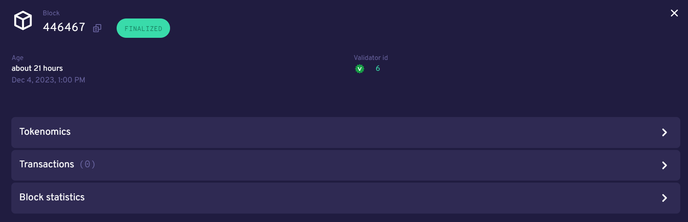

CCDScan Staking overview#
The Staking overview shows information about validators during the selected time range in the filter:
The graphs show when the next pay day happens, the amount of staked CCD, the number of validators, and the total of rewards during the selected time range in the filter. The Previous payday block contains information about all rewards paid out for a payday period. If you click Previous payday block, a special block details screen for the previous pay day block appears.
The Pay Day block details contains the following:
Block: the first six characters of the block hash. Click Copy
 to copy the entire hash. The block status is also shown.
to copy the entire hash. The block status is also shown.Age: the age of the block and date/time stamp when it was created.
Validator id: ID of the validator who produced the block. Click the validator ID to see the validator details.
- Tokenomics: contains the following details about the block:
Distributed minted CCD: Contains the total minted CCDs and a breakdown on their distribution across the block reward account, finalization reward account, and foundation account. Note that finalization rewards are zero as of December 7, 2023.
Accrued block rewards: similar to a ‘regular’ block; contains the accrued block rewards.
Payday foundation rewards: displays the payout to the foundation account for the pay day period and contains the option to drill-through to the foundation account.
Payday account rewards: lists all the accounts and the rewards broken down by block reward and transaction fees.
Payday pool rewards: lists all the pools (including passive delegation) and the rewards broken down by block reward and transaction fees.
Transactions: shows the transaction(s) contained in the block, if any, including the first six characters of the transaction hash, transaction type, first six characters of the Sender account, and the cost of the transaction. You can click Hash for more information about the transacation, or click Sender for more information about the sender. You can click Copy
to copy the entire hash or account number.Block statistics: shows the block time (time since last block) and the finalization time of the block (the time before proof of finalization of the selected block was included in a subsequent block).
Below the graphs, you can switch between Staking pools and Top delegators. You can also choose to see details for Passive delegation. There is a switch to Show only open pools and a filter where you can choose how the data shown in the table should be ordered.
Staking pools view#
If you select Staking pools the table contains a list of all validators/pools (including historic validators) sorted by their staked amount, containing the following:
Validator ID: ID of the validator. This is the ID you need if you want to delegate to the staking pool in a wallet. Click the validator ID to see the validator details. If the validator has been removed (i.e. the validator is no longer active), Removed appears next to the ID.
Validator APY (30 days): the calculated yield of the validator for the past 30 days.
Delegators APY (30 days): the calculated yield of the delegators for the past 30 days.
Delegation pool Status: the staking pool status. Can be Open for all, Closed for all, or Closed for new.
Delegators: the number of delegators that validator has if the validator has an open pool
Available for delegation: shows the maximum number of remaining CCDs available for delegation based on the capital bound and the leverage factor between a validator and associated delegators. Based on the cap imposed.
Total stake: shows the combined stake of the validator and delegators (if any) and the percentage breakdown of the split between the two.
Top delegators view#
If you select Top delegaators you see a list of all delegators sorted by their staked amount. You can see account details, including details about the delegation target (staking pool or passive delegation), and so on. The table contains the following:
Account address: the first six characters of the account address. You can click Copy
to copy the entire address. If you click on an account address, the account details appears.Delegation target: the validator whose pool the account has staked. If you click on a validator ID, the validator details appears.
Restake earnings: shows the delegator’s restaking preference.
Staked amount: amount of CCD the delegator has staked.
Passive delegation view#
If you select Passive delegation it is possible to see the size of the passive delegation in total and information about the yield from delegating to passive delegation. Furthermore it is possible to see the commission rates for passive delegation.
Delegated stake: amount of CCD delegated to passive delegation.
APY (7 days): the calculated yield of passive delegation based on past 7 days.
APY (30 days): the calculated yield of passive delegation based on past 30 days.
Block commission: percent of rewards paid as commission to validator.
Transaction commission: percentage of transaction rewards that are paid as commission to the validator.
- Rewards: list of rewards paid out during the selected time range. Includes an overview graph that shows the aggregated rewards for passive delegation based on the applied filter. Rewards details are displayed in a table.
Time shows the date/time the reward was paid
Reference shows the first six characters of the block hash in which the reward was paid. You can click Copy
to copy the entire hash. Click the hash to see the block details for the block where the award payout occurred.Rewards shows the amount of reward distributed.
Delegators: the delegators staking to passive delegation, their restake preference, and amount staked. Click on a Hash to see account details. You can click Copy
to copy the entire account address.
Validator details#
When you click a validator ID, the following appears:

The validator details shows the following information about the validator.
Validator: the validator ID. This is the ID you need if you want to delegate to the staking pool in a wallet. If the validator has been removed (i.e. the validator is no longer active), Removed appears next to the ID and a timestamp shows when the validator stopped.
If there are any pending changes, they are shown here. Events such as stake increase, stake reduction, or validator stop are displayed.
Total stake: the validator’s total stake. Below the total is the amount staked by the validator and the amount of stake that comes from delegators.
Account: the first six characters of the validator account. You can click on the characters for more information about the sender. You can click Copy
to copy the entire account number.Staking pool status: the staking pool status. Open for all means that the staking pool is open for delegation. Closed for all means that you cannot delegate to that staking pool. Closed for new means that new delegators cannot delegate to that pool but existing delegators remain in the pool.
APY Period: choose between 7 days or 30 days. This seletion affects the Total APY, Validator APY, and Delegators APY.
Validator rank: the validator’s rank out of all validators on Mainnet/Testnet based on the validator’s total stake.
Block commission: the validator’s commission percent.
Transaction commission: percentage of transaction rewards that are paid as commission to the validator.
- Payday rewards: shows the sum of rewards earned by the validator and the individual rewards transactions for the time range selected in the filter.
Time: shows the date/time the reward was distributed.
Reference: shows the first six characters of the transaction hash. Click on the first six characters of a hash in Reference to see information about the transaction. Click Copy
to copy the entire hash number.Amount: shows the amount of the reward. If you click on Show more you can see the breakdown of the reward by validation rewards and transaction fees.
Related transactions: shows other transactions related to this validator ID. You see the hash (transaction hash), transaction type, and the transaction age. You can click on the hash characters for more information about the transacation. Click Copy
to copy the entire hash number.Delegators: shows the first six characters of the account delegating to the validator, that account’s delegated stake, and whether earnings are restaked. You can click on the characters of the account for more information about the delegator. Click Copy
to copy the entire account number.Metadata: contains the URL that the validator can optionally provide with information about the staking pool.